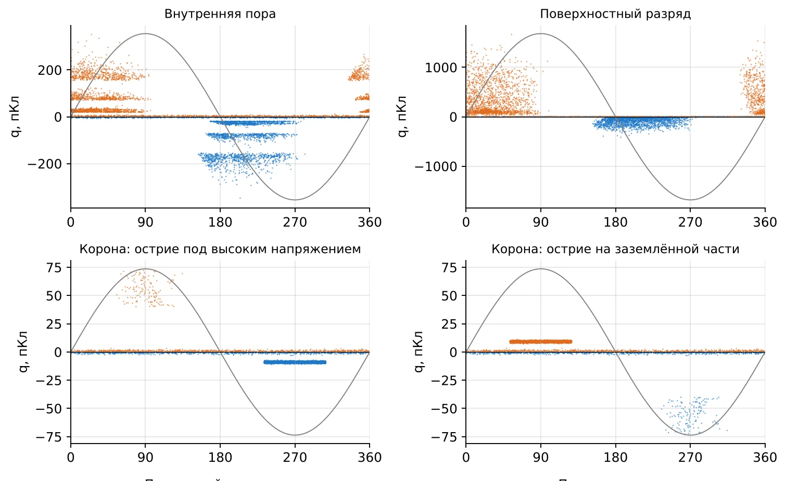
Техника высоких напряжений
Лекции 10–11 и практическое занятие
13.03.02 «Электроэнергетика и электротехника» · интерактив «ЧР и PRPD»
План блока
ЛЕКЦИЯ 10
ЛЕКЦИЯ 11
ПРАКТИКА
Лекция 10
Почему маленькая пора разряжается тысячи раз в секунду, а изоляция ещё держит — и как это измерить в пикокулонах
1 · Определение
Местный электрический разряд, который замыкает только часть изоляции между электродами (ГОСТ Р 55191-2012). Изоляция в целом продолжает держать напряжение, а разряд повторяется каждый полупериод.
| Вид ЧР | Где возникает | Пример |
|---|---|---|
| Внутренний | Газовая пора, расслоение, трещина | Непропитка литой обмотки, пора в кабеле |
| Поверхностный | Вдоль поверхности твёрдой изоляции | Край экрана кабельной муфты, выход стержня из паза |
| Корона | Газ у электрода с малым радиусом | Острая кромка шины, заусенец |
| Триинг | Каналы, «проеденные» разрядами в полимере | Электрический триинг в сшитом полиэтилене |
2 · Поле в поре
Плоская пора поперёк поля: нормальная составляющая индукции непрерывна, ε0·Eв = ε0·εr·E.
Eв / E = εr
Сферическая пора:
Eв / E = 3εr / (2εr + 1)
Газ в поре в 5–10 раз слабее твёрдой изоляции — поэтому разряд начинается именно там.
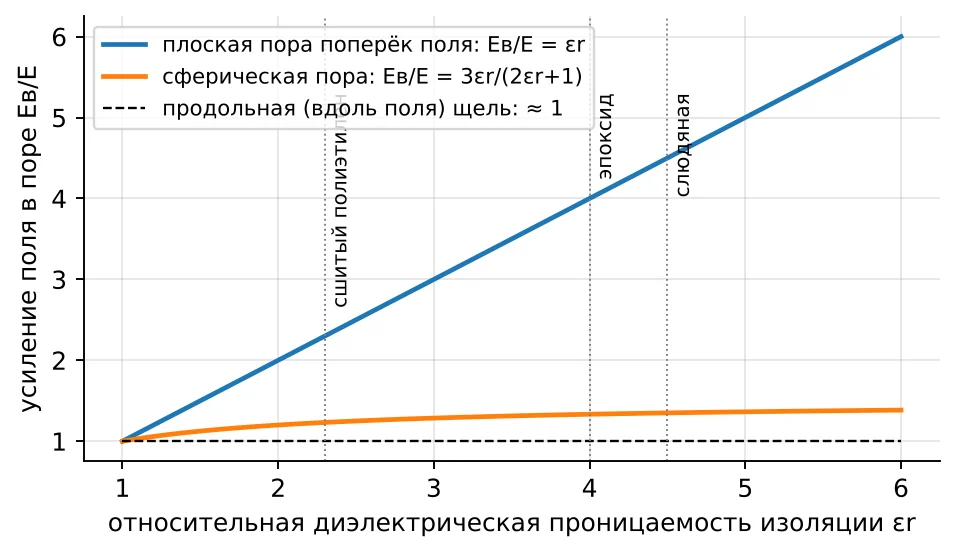
3 · Закон Пашена
Uпр = B·p·d / [ ln(A·p·d) − ln ln(1 + 1/γ) ], A = 15, B = 365 (воздух, Торр·см)
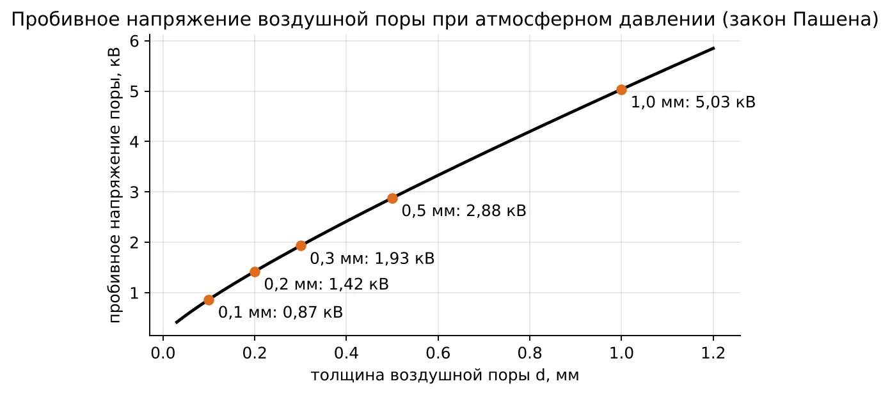
3 · Напряжение возникновения
k = d·εr / (D − d + d·εr)
Uв = Uпр / (√2 · k)
| Пора d | k | Uпр, кВ | Uв, кВ |
|---|---|---|---|
| 0,1 мм | 0,121 | 0,87 | 5,05 |
| 0,3 мм | 0,308 | 1,93 | 4,44 — min |
| 0,5 мм | 0,444 | 2,88 | 4,58 |
Эпоксид εr = 4,0, изоляция D = 3 мм
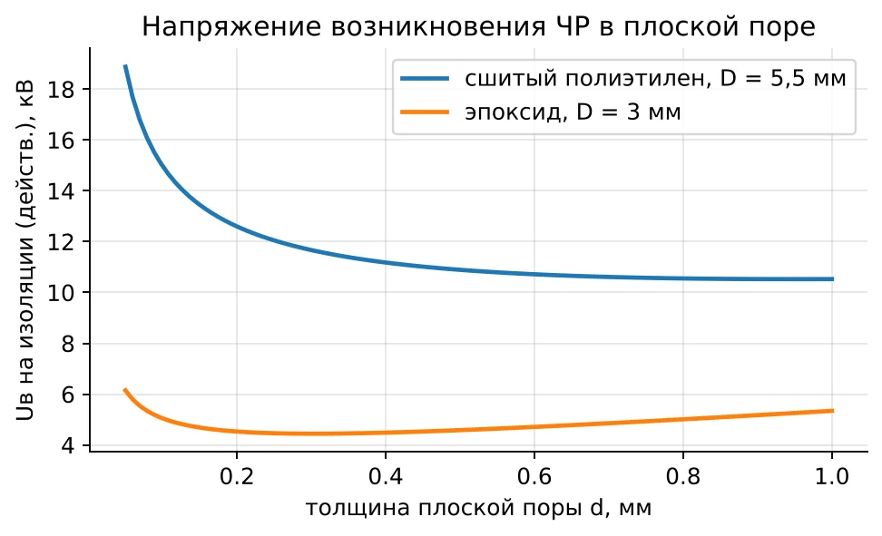
4 · Схема замещения a–b–c
Шунтирована искровым промежутком F: пробой газа
Cc = ε0·A / d
Изоляция над и под порой
Cb = ε0·εr·A / (D − d)
Вся здоровая изоляция объекта, Ca ≫ Cb
Ca ≈ C объекта
КАЖУЩИЙСЯ ЗАРЯД — его меряет прибор
q = Cb · ΔU
ΔU ≈ Uпр − Uост — скачок напряжения на поре
ПРИМЕР: эпоксид, пора 0,3 × 2 мм
Cb = 41 фФ, Cc = 93 фФ, ΔU ≈ 1,78 кВ
q = 73 пКл, q ист = (Cb + Cc)·ΔU = 238 пКл
5 · Разряды во времени
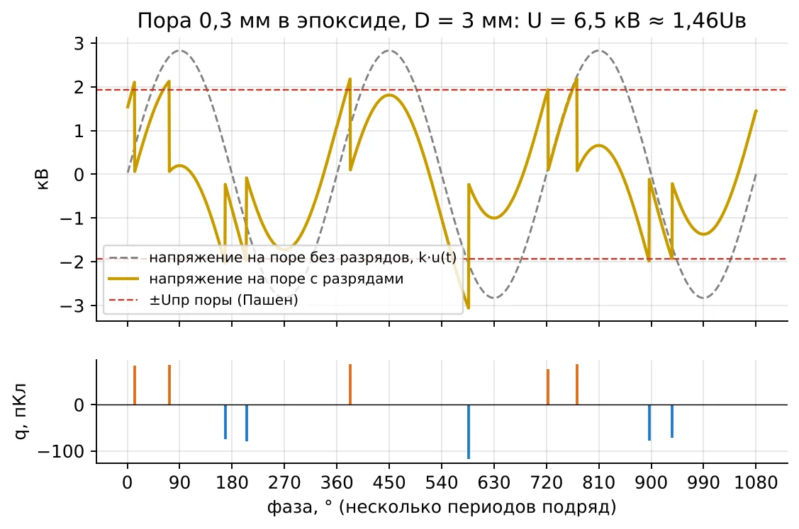
Пока |U| на поре растёт: 0–90° и 180–270°
В «+» полуволне импульсы «+», в «−» — «−»
С ростом U растёт число импульсов, а не их величина
5.1–5.3 · Память, запаздывание, погасание
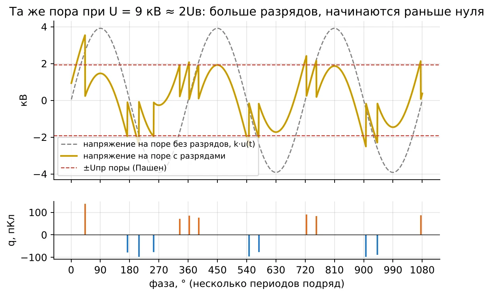
Разряды начинаются раньше нуля напряжения: при 2Uв — с 335°
Нужен свободный электрон: разброс по фазе и величине
Начавшись, разряды держатся до 0,75–0,9 Uв
В интерактиве · вкладка «1 Пора в изоляции»
Эпоксид, 0,3 мм, «1 период/с». Первые разряды при 4,5–4,6 кВ, расчёт — 4,44
«Очистить PRPD», «0,2 периода/с», «+1 период», затем «10 периодов/с»
6 импульсов за период, «+» разряды начинаются с 335°
Стрелкой по 0,1 кВ: разряды держатся до 3,3–3,9 кВ
6 · Характеристики ЧР
| Величина | Определение | Единица |
|---|---|---|
| Кажущийся заряд q | Заряд, дающий тот же отсчёт | пКл |
| Частота повторения n | Импульсов в секунду | 1/с |
| Средний ток I | Σ|qi| / T | А |
| Квадратичная скорость D | Σqi² / T | Кл²/с |
| Мощность P | Σqi·ui / T | Вт |
| Qm (МЭК/TS 60034-27) | Импульсы, повторяющиеся 10 раз в секунду | пКл, мВ |
ЭНЕРГИЯ ОДНОГО РАЗРЯДА
W ≈ ½ · q · √2 · Uв
q = 500 пКл, Uв = 6 кВ
W ≈ 2,1 мкДж
Мало? При 10⁴ импульсов в секунду за год в одной точке — порядка килоджоуля.
7 · Старение
1
Ионы и электроны разрывают связи, эрозия стенок
2
Озон, оксиды азота, с влагой — азотная кислота
3
Свечение разряда разрушает полимер
4
Сотни градусов в канале разряда
5
Ветвящиеся каналы растут до пробоя
Стойкость разная: полимер и литая изоляция не прощают ЧР, слюда терпит их десятилетиями — отсюда разные нормы.
8 · Измерение по ГОСТ Р 55191 (МЭК 60270)
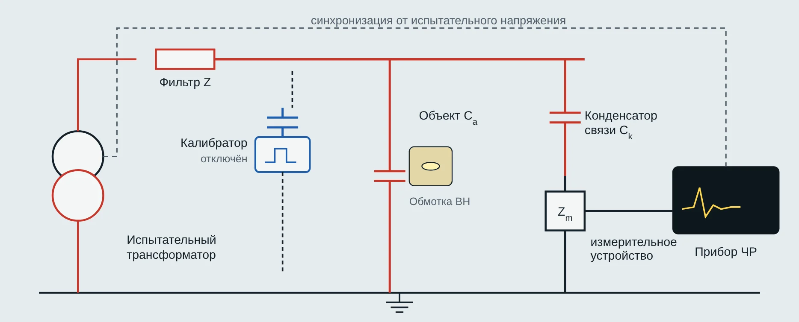
Не пускает помехи источника, не даёт импульсу уйти в трансформатор
Без ЧР, отдаёт заряд объекту при разряде
Импульс тока → импульс напряжения → пКл
Фаза от того же напряжения — для PRPD
8.2 · Почему прибор измеряет заряд
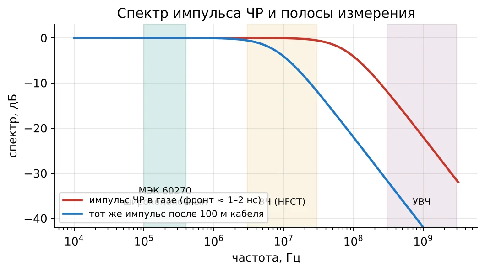
Импульс ЧР в газе длится 1–2 нс, в кабеле он расплывается.
Ниже ~1 МГц спектр плоский и равен заряду импульса — интеграл тока.
Полоса МЭК 60270: 100–400 кГц — прибор интегрирует импульс и показывает пКл, как бы ни исказился фронт.
8.3 · Чувствительность
η = Ck / (Ca + Ck)
| Кабель 30 нФ | Ck 100 пФ | Ck 2 нФ |
|---|---|---|
| Доля η | 0,33 % | 6,25 % |
| Порог | ≈ 75 пКл | ≈ 4 пКл |
| q при 10,4 кВ | не виден | 4,6 пКл |
Вывод: Ck — не меньше нескольких процентов от Ca.
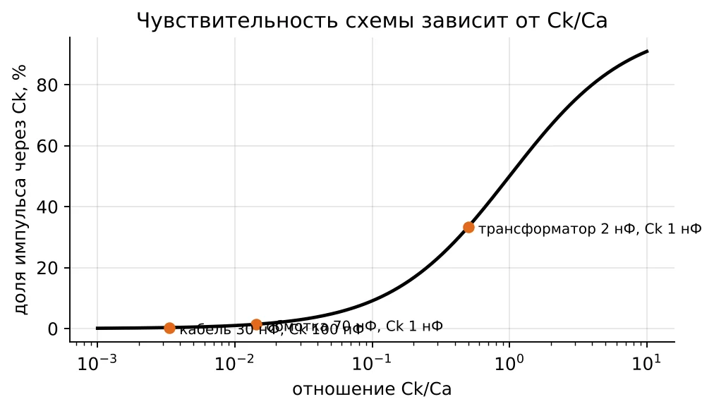
8.4 · Калибровка
ПРИМЕР: обмотка 2 нФ, Ck 1 нФ
q0 = U0·C0
100 пКл → 66,67 мВ
k = 1,500 пКл/мВ
Импульс ЧР 22,8 мВ → 34,2 пКл
8.5 · Порядок испытания
ШАГ 1
Схема без объекта под напряжением
ШАГ 2
Плавный подъём до устойчивых ЧР
ШАГ 3
Выдержка, запись q
ШАГ 4
Плавное снижение до погасания
ШАГ 5
Схема, калибровка, фон, Uв, q, Uп
Трансформатор 6 кВ, Uисп = 7,8 кВ: 34,2 пКл при норме 10 пКл — не прошёл
9 · Другие методы
| Метод | Что регистрируют | Где применяют |
|---|---|---|
| ВЧ трансформатор тока, 1–30 МГц | Ток в заземлении экрана | Онлайн: кабели, машины |
| Ёмкостные датчики 80 пФ | Импульс на выводах | Генераторы, двигатели |
| УВЧ, 0,3–3 ГГц | Излучение разряда | КРУЭ, трансформаторы |
| Акустический, 20–300 кГц | Звуковая волна | Локация в баке, КРУ |
| TEV на корпусе | Импульсы на оболочке | КРУ 6–35 кВ |
| Газы в масле | Водород, метан | Масляные трансформаторы |
| Оптический | Свечение, ультрафиолет | Корона на ВЛ и ПС |
10 · Локализация
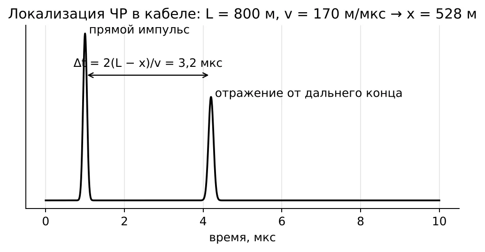
x = L − v·Δt / 2
L = 450 м, v = 170 м/мкс, Δt = 4,12 мкс → x = 100 м
s = vзв · t, vзв ≈ 1400 м/с
11 · Нормы
| Оборудование | Условие | Порядок нормы |
|---|---|---|
| Кабели из сшитого полиэтилена 6–35 кВ | 1,73 U0 | ≤ 10 пКл (МЭК 60502-2) |
| Сухие трансформаторы с литой изоляцией | ≈ 1,3 Uном | ≤ 10 пКл (МЭК 60076-11) |
| Измерительные трансформаторы, вводы | по стандарту | единицы–десятки пКл |
| Масляные силовые трансформаторы | по программе | сотни пКл |
| Машины со слюдяной изоляцией | фазное | нормы нет — тренд и сравнение |
Ориентиры для порядка величин; на объекте — действующий стандарт на изделие.
Итог лекции 10
1. Чем ЧР отличается от пробоя?
5. Кажущийся и истинный заряд: какой больше?
2. Почему поле в плоской поре в εr раз больше?
6. Почему разряды на подъёмах полуволн?
3. Почему мелкие поры прочнее по напряжённости?
7. Почему Uп < Uв и чем это опасно?
4. Что означает каждая ёмкость схемы a–b–c?
8. Почему калибратор — к выводам объекта?
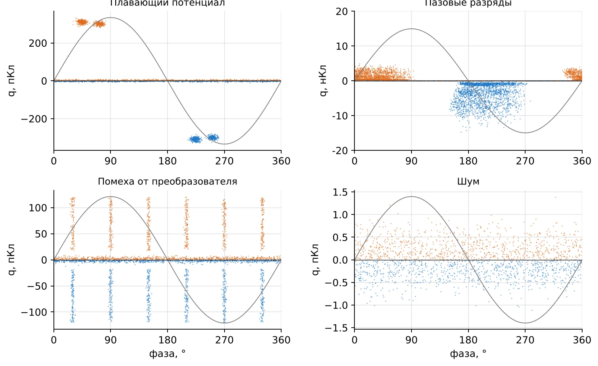
Лекция 11
Тысячи импульсов на одной картинке: по форме облаков узнаём дефект, по тренду — решаем, что делать
1–2 · Фаза и построение
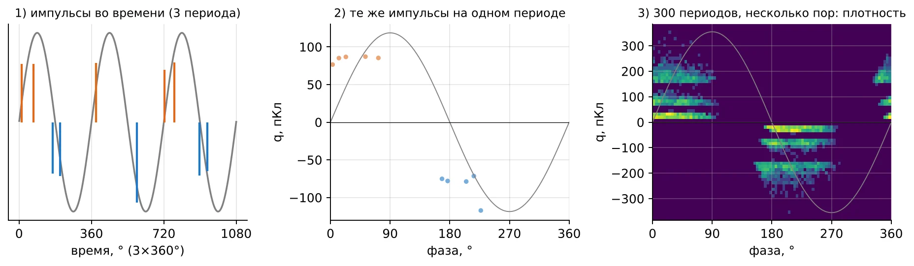
Фаза от испытательного напряжения
Для каждого импульса выше порога
N периодов на одну плоскость
Клетки и цвет — число попаданий
3 · Гистограммы и числа
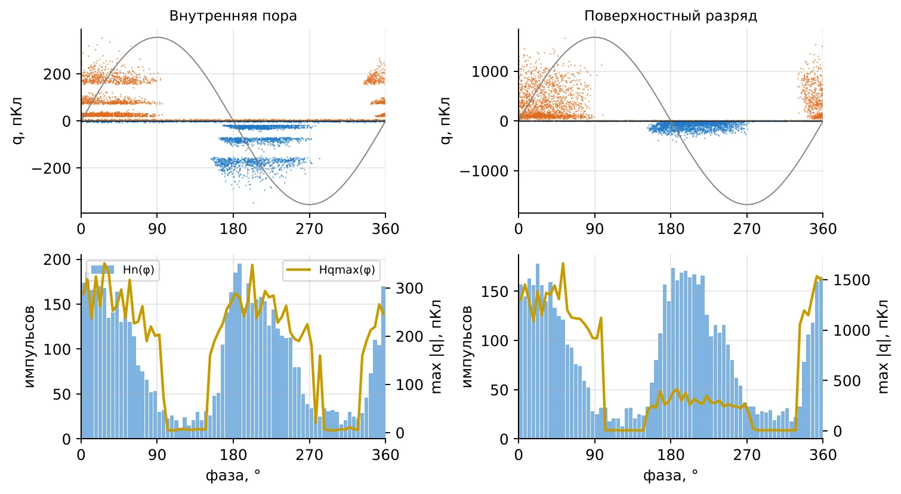
Hn(φ) — сколько импульсов на 5° фазы
Hqmax(φ) — наибольший заряд на 5°
Qm — величина, повторяющаяся 10 раз/с
Асимметрия Q+ / Q−
Фаза начала и ширина облака
4 · Картина поры
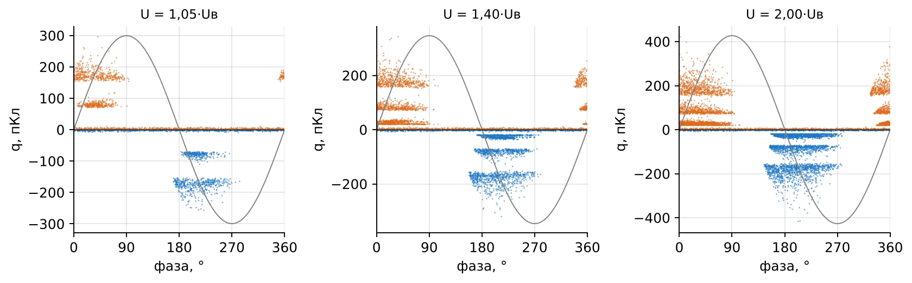
|U| на поре растёт
Эффект памяти
Поры разного размера
Статистическое запаздывание
5 · Галерея, часть 1
Два одинаковых облака, полосы
«+» облако в 2–3 раза крупнее
Ровная полоса мелких у 270°
Зеркально: полоса у 90°
5 · Галерея, часть 2
Пары одинаковых крупных импульсов
«−» облако крупнее, нКл
Шесть столбиков через 60°
Равномерная «трава», < 1 пКл
6 · Алгоритм чтения
1
От той ли фазы взят сигнал?
5
Симметрично — внутри; нет — поверхность, корона
2
Есть ли картина без напряжения?
6
Широкий — поры; узкий — корона, плавающий
3
Порог выше равномерной «травы»
7
Как меняется картина при подъёме U?
4
Подъёмы полуволн или пики?
8
Что было в прошлый раз?
7.1 · Ловушка: чужая синхронизация
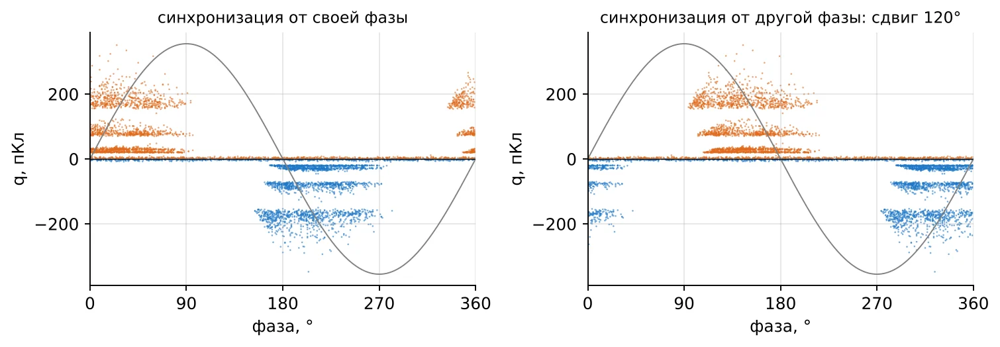
Облака стоят «не там» — похоже на корону или поверхность. Проверка: откуда взят сигнал фазы?
7.2–7.3 · Ловушка: помехи
U/Uв = 1,4: пора + помеха
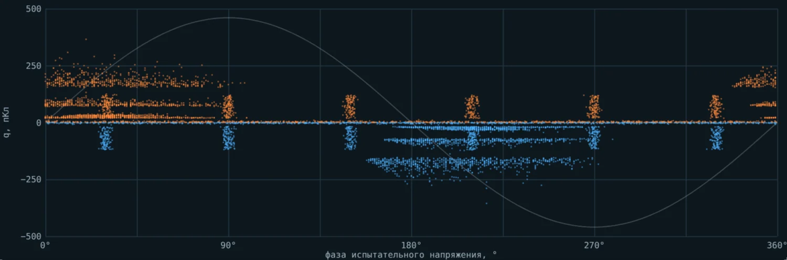
U = 0: осталась только помеха
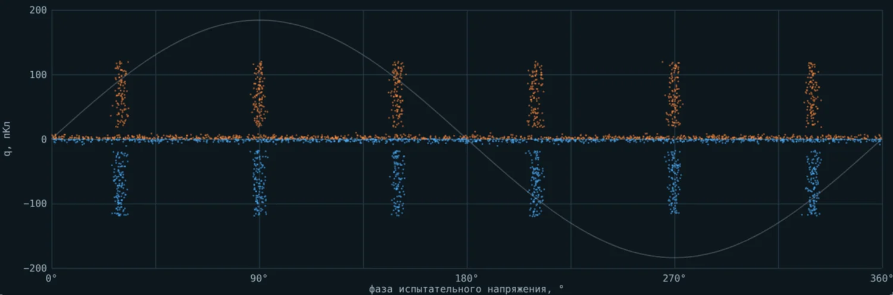
ЧР исчезают без напряжения, помеха — нет
Фильтры, стробирование, экранирование
Классическая PRPD 50 Гц плохо подходит
8 · По видам оборудования
| Оборудование | Как измеряют | На что смотрят |
|---|---|---|
| Кабели | VLF 0,1 Гц, колебательное; онлайн — HFCT | Муфты, заделки; локализация по отражению |
| Машины 6–20 кВ | Онлайн: 80 пФ на выводах | Тренд Qm, асимметрия, сравнение фаз |
| Силовые трансформаторы | Вводы, акустика, газы в масле | Водород, акустическая локация |
| КРУ 6–35 кВ | TEV, ультразвук | Корона, разряды на изоляторах |
| КРУЭ | УВЧ-датчики | Свободные частицы, выступы |
| Сухие и измерительные трансформаторы | Заводские испытания, ГОСТ Р 55191 | Норма порядка 10 пКл; поры литья — брак |
9 · Тренды и решения
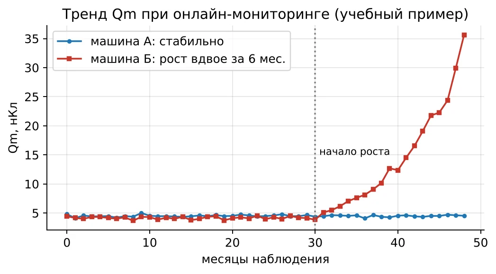
| Ситуация | Признак | Решение |
|---|---|---|
| Норма | Qm стабилен | Плановое наблюдение |
| Внимание | Рост заметен, картина та же | Чаще измерять |
| Тревога | Qm ×2 за полгода, асимметрия | Проверка на останове |
| Срочно | Скачок, новые крупные импульсы | Вывод из работы |
«Вдвое за полгода» — ориентир практики, не норма. Падение Qm при старении поры — не улучшение.
Итог лекции 11
1. Что по осям PRPD и откуда фаза?
5. Как отличить плавающий потенциал от поры?
2. Почему облака поры на подъёмах полуволн?
6. Помеха или ЧР — проверка за минуту?
3. Почему с ростом U облака сдвигаются к нулю?
7. Что даст синхронизация от другой фазы?
4. Корона на ВН и на земле: чем отличаются?
8. Почему у машин важен тренд, а у кабелей — норма?
Практическое занятие
А · 30 мин
8 расчётных задач
Б · 25 мин
8 PRPD с объектов
В · 25 мин
Измерение с калибровкой
Г · 10 мин
Опыты на модели поры
Часть А · Расчёты
1. Калибровка. 100 пКл дают 40 мВ; импульсы ЧР — 180 мВ. Заряд?
5. Кабель 800 м. Отражение через 3,2 мкс, v = 170 м/мкс. Где дефект?
2. Пора в кабеле. D = 5,5 мм, εr = 2,3, d = 0,2 мм, Uпр = 1,42 кВ. Uв?
6. Акустика. Звук пришёл через 210 мкс, масло 1400 м/с. Расстояние?
3. Энергия. Двигатель 6 кВ: 500 пКл при Uв = 6 кВ. W одного разряда?
7. Чувствительность. Ca = 10 нФ, Ck 1 нФ → 100 пФ. Во сколько раз упал отсчёт?
4. Средний ток. 200 импульсов за период по 300 пКл, 50 Гц. I?
8. Приёмка. Кабель 6/10 кВ, U0 = 6 кВ, испытание 1,73 U0. Uисп?
Часть Б · Чтение PRPD
1. Что за источник? 2. Что делать?
Б1 · Кабель 10 кВ, сшитый полиэтилен, 1,2 км
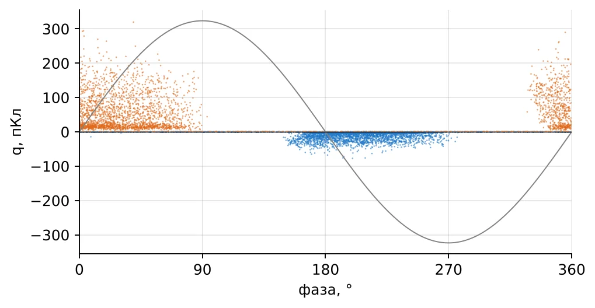
После монтажа новой соединительной муфты; при 1,7 U0 = 10,2 кВ импульсы до 300 пКл
Б2 · Двигатель 6 кВ насоса водоотлива
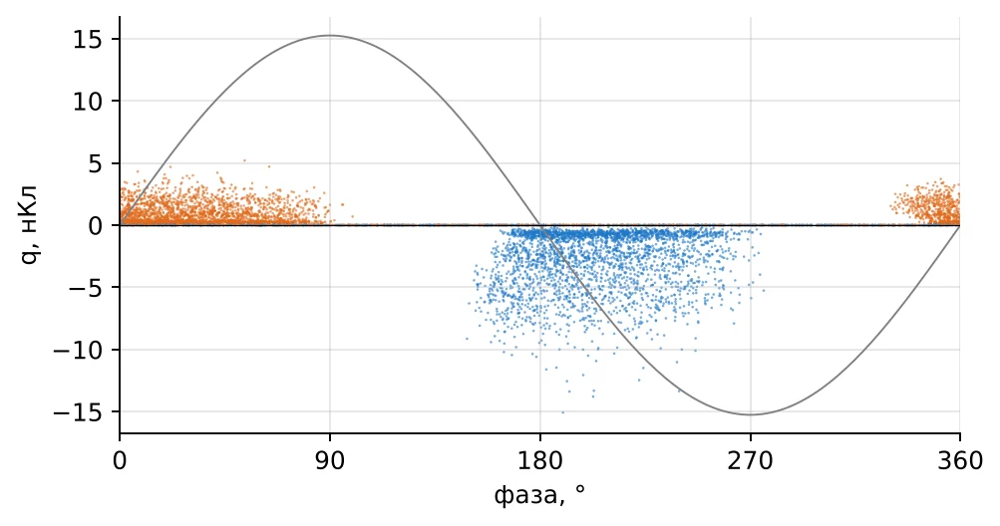
Капитальный ремонт, 25 лет в работе, жалобы на вибрацию; испытание фазным напряжением
Часть Б · Чтение PRPD
1. Что за источник? 2. Что делать?
Б3 · Гидрогенератор 10,5 кВ, онлайн
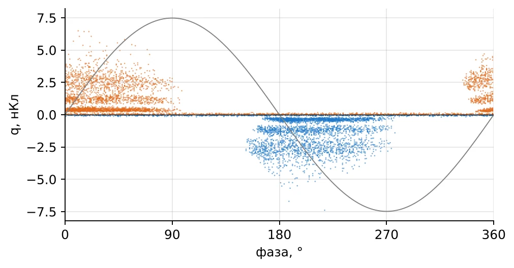
Датчики 80 пФ на выводах; Qm 4–5 нКл уже четыре года без роста; слюдяная изоляция
Б4 · Сухой трансформатор 6/0,4 кВ, 1000 кВ·А
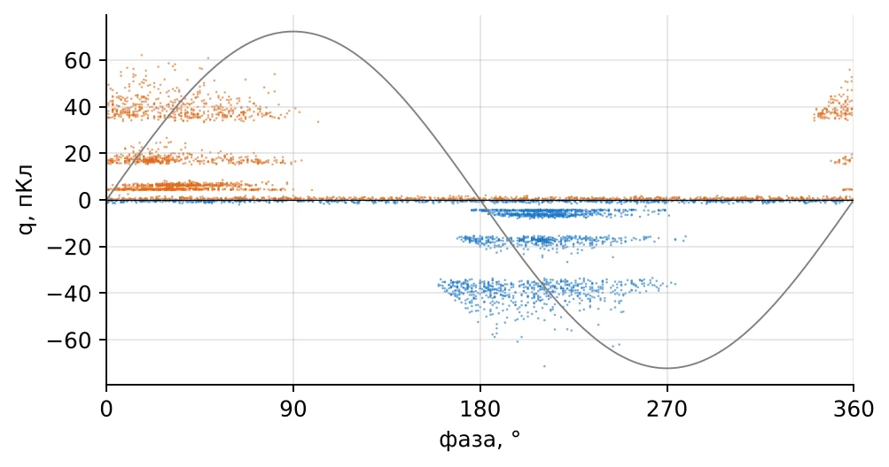
Приёмка на заводе: 60 пКл при норме порядка 10 пКл, картина устойчивая
Часть Б · Чтение PRPD
1. Что за источник? 2. Что делать?
Б5 · Ячейка КРУ 6 кВ, испытание шин
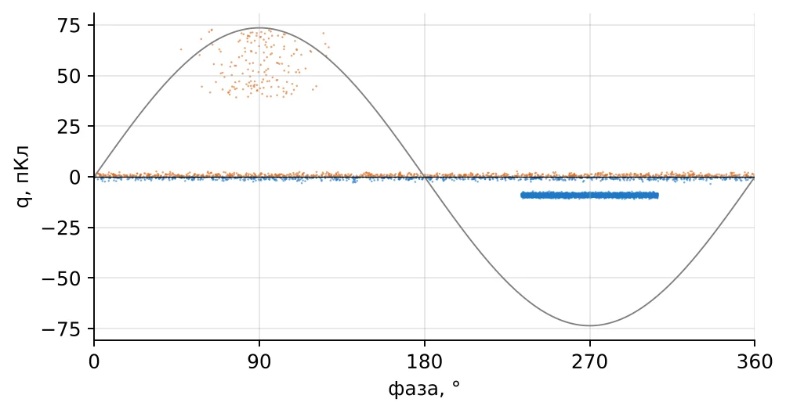
Слышен треск, много мелких одинаковых импульсов; при подъёме U — редкие крупные
Б6 · ПС 6 кВ обогатительной фабрики
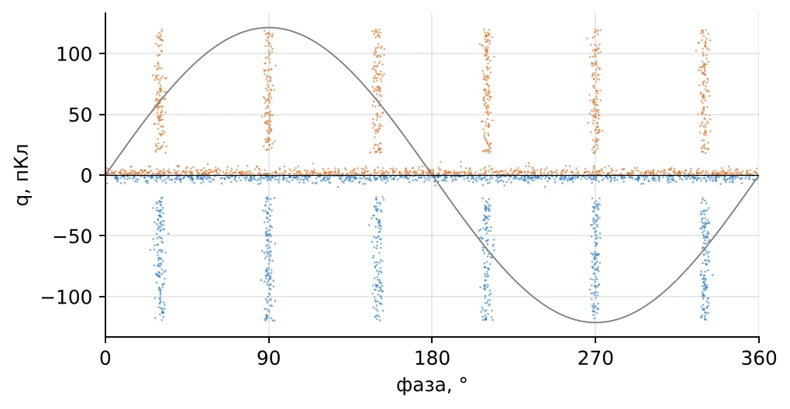
Рядом работает тиристорный выпрямитель; картина есть и при снятом с кабеля напряжении
Часть Б · Чтение PRPD
1. Что за источник? 2. Что делать?
Б7 · Трансформатор напряжения 6 кВ
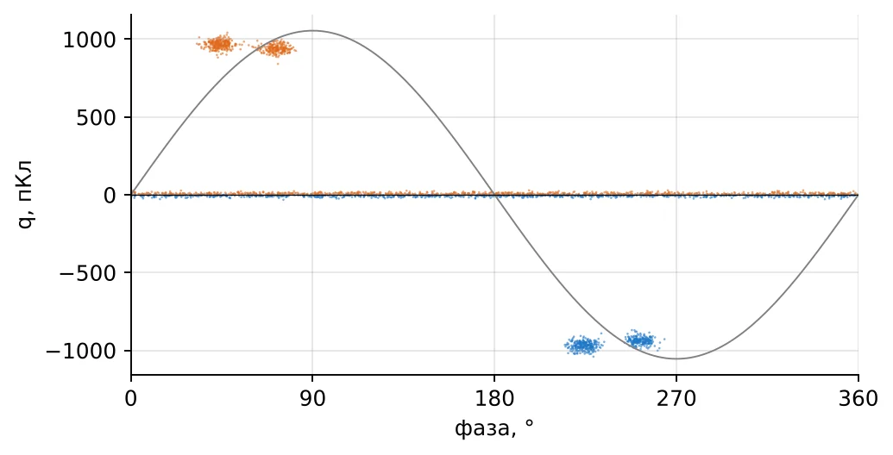
После ремонта: несколько крупных импульсов около 1 нКл, почти постоянных, мало меняются с U
Б8 · Двигатель 6 кВ, измерение с выводов
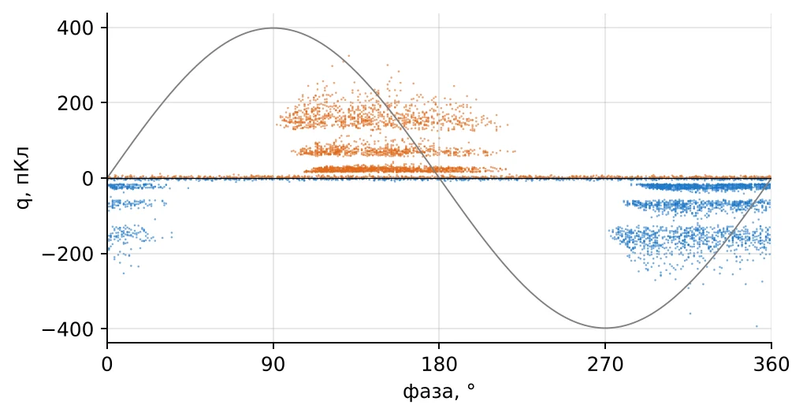
Похоже на корону у положительного пика; синхронизацию взяли от ТН другой фазы
Части В и Г · Интерактив
В1 · ВКЛАДКА 3
В2 · ВКЛАДКА 3
Г · ВКЛАДКА 1
Главное
ЧР начинаются, когда напряжение на поре достигает пробивного по Пашену
Прибор меряет кажущийся заряд — только после калибровки этой схемы
PRPD узнаёт дефект по фазе и форме облаков, тренд — решает, что делать
Домашнее задание: тест во вкладке «6 Тест» интерактива и чек-лист студента